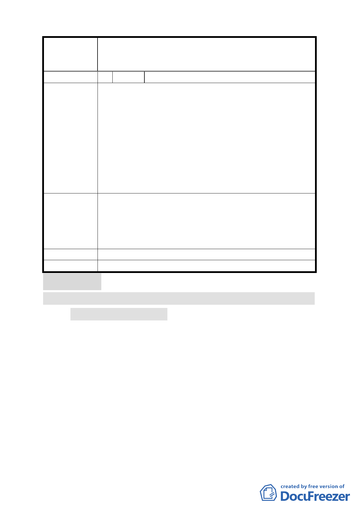

案名
編號
陳情理由
建議辦法
發展局回應
委員會決議
修訂「臺北市大同區大稻埕歷史風貌特定專用區細部計畫
案」內「大稻埕歷史風貌特定專用區都市設計管制要點」
第七點停車空間規定案
2 陳情人 莊子華
「大稻埕歷史風貌特定專用區細部計畫案」所訂定的歷史
街區範圍，非僅屬臨迪化街二側之建築物範圍。民樂街、
安西街以西等空間均屬歷史街區，且迪化街之多處傳統街
屋同時臨迪化街及民樂街或安西街，若依原都發局解釋，
必須設置停車空間或繳納代金，但因本區停車代金平均每
輛價格為 200 萬元，且繳納後並無實質增加停車空間，故
居民趨向自設停車位，造成保留原始空間使用機能幾乎不
可能。若強行設置停車位常因建物面寬不足而損失民樂街
及安西街之原始空間及特性，似乎有違背歷史街區保存之
原意。
特定專用區內傳統街屋同時臨迪化街及民樂街或安西街
之建築基地，在未增加空間使用強度之開發條件下，應適
用其樓地板面積得不計入「臺北市土地使用分區管制規
則」第 86 條之 1、第 86 條之 2 規定計算停車空間及裝卸
位。
同編號 1－發展局回應內容。
同編號 1 決議。
討論事項 五
案名：變更臺北市信義區信義段三小段五三之三四地號人行步道
用地為道路用地計畫案
案情概要說明：
一、 計畫範圍及面積：本基地位於博愛國小及興雅國中南側，5
公尺寬人行步道，面積：936 平方公尺。
二、 變更理由及內容：本案變更係因信義計畫區辦理市地重劃配
地時，分配於該人行步道南側之部分住宅區基地僅臨接單邊
人行步道，經地主陳情其東側及南側之土地分屬不同私人所
有，整合不易，導致無法單獨建築設置汽機車出入口。囿於
本案問題之產生係重劃分配土地所致，為避免影響其權益，
擬透過都市計畫變更該人行步道用地為道路用地，爰辦理本
都市計畫變更案。
9